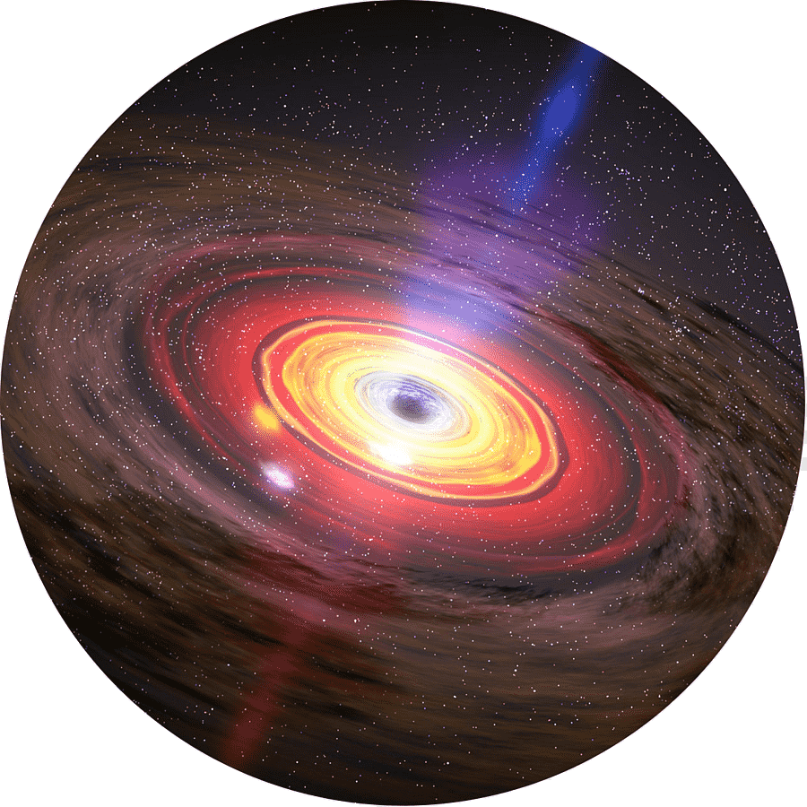

Главная
ffВпервые мы обнаружили их в 1962 году, менее чем 50 лет спустя количество зафиксированных пожирателей вселенной перевалило за сотню тысяч, но т.к. наши технологии всё ещё далеки от идеала, то сколько их на самом деле знает пока только один бог. Пакуйте чемоданы дамы и господа. Вселенский апокалипсис,….а хотя, о чём это я? Валить то некуда.
ffНу а если серьёзно… Есть в космосе объекты которых невозможно увидеть невооружённым взглядом, при этом, они являются чуть-ли не самыми яркими источниками света. Ещё более странным является то, что из-за этих объектов наша вселенная гаснет в прямом смысле этого слова. Проще говоря, прямо сейчас, когда вы читаете этот текст, мир вокруг вас умирает.
ffВ космосе существуют некие чёрные дыры – область пространства с невероятно мощной гравитацией, которая буквально засасывает в себя всё, что находится или пролетает рядом, и больше никогда не выпускает обратно: не в силах выбраться даже свет. Появляется это чудо после смерти огромной звезды, которая должна быть, как минимум, в 3 раза тяжелее нашего солнца, когда такая звезда израсходует всё своё топливо, она постепенно выгорит и под действием собственной силы тяжести провалится внутрь самой себя, вокруг появится воронка тяготения – это как вода в ванной, когда вы выдернули пробку. Вся оставшаяся от звезды материя начнёт засасываться внутрь этой, так называемой, дыры. Что творится внутри - нам не известно.
ffВ случае же когда умирает звезда прямо-таки невероятных размеров, на её месте уже рождается сверхмассивная чёрная дыра, и если вокруг неё будет достаточно много вещества, оно начинает падать в дыру и закручиваться в аккреционный диск, разгоняясь при этом до около-световых скоростей. Из-за трения в веществе начинает выделяться огромная энергия, которая создаст невероятно мощное свечение. Вот это явление называется – квазар.

 https://vk.com/carpetx
https://vk.com/carpetx ed.plotnickov2016@yandex.ru
ed.plotnickov2016@yandex.ru